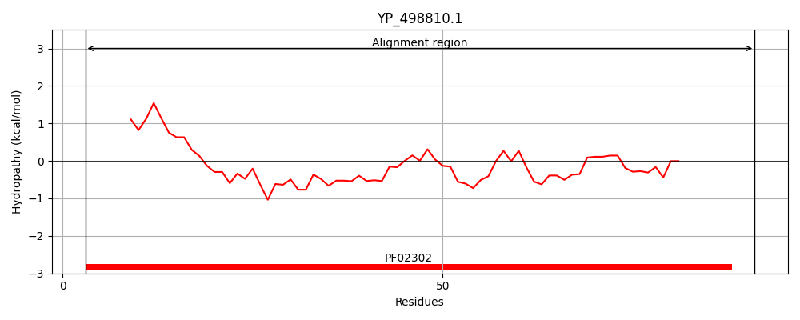
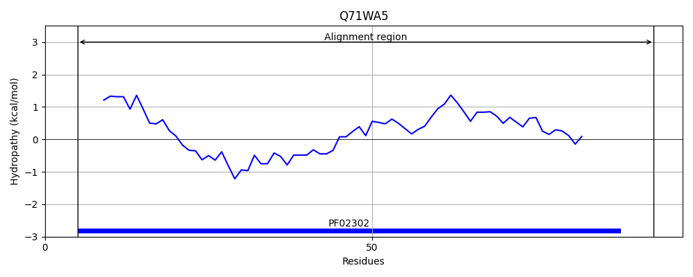
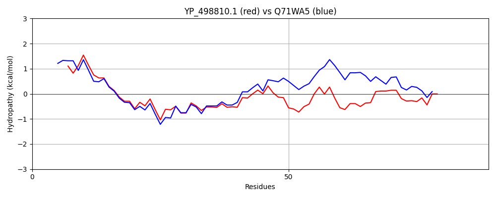

Hit Accession: Q71WA5
Hit TCID: 4.A.5.1.2
Hit Description: gnl|BL_ORD_ID|15188 gnl|TC-DB|Q71WA5|4.A.5.1.2 Putative PTS system, galactitol-specific, IIB component OS=Listeria monocytogenes serotype 4b (strain F2365) GN=LMOf2365_2646 PE=4 SV=1
Mach Len: 89
e:0.000000
Query TMS Count : 0
Hit TMS Count: 0
TMS-Overlap Score: 0.000000
Predicted Substrates:CHEBI:10078;xylitol, CHEBI:22605;arabinitol
BLAST Alignment:
| Protein Hydropathy Plots: | |
|---|---|
|  |  |
Pairwise Alignment-Hydropathy Plot: | |
|  | |